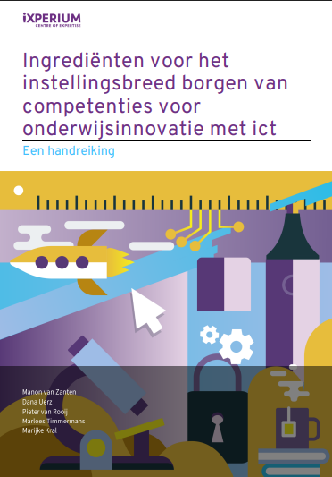
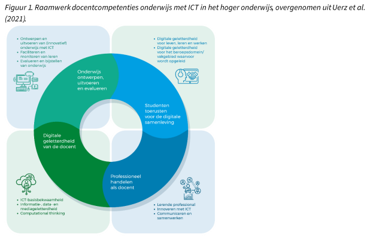
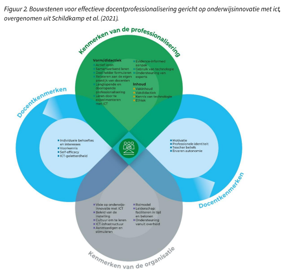
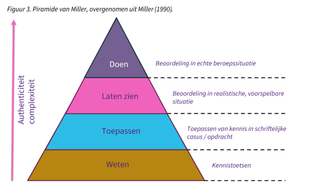

Welkom bij de Handreiking
Deze interactieve module is gebaseerd op de handreiking "Ingrediënten voor het Instellingsbreed Borgen van Competenties voor Onderwijsinnovatie met ICT" van iXperium, Centre of Expertise.
Gebruik de navigatie aan de linkerkant om door de verschillende secties en pagina's te bladeren.

Auteurs:
Manon van Zanten, Dana Uerz, Pieter van Rooij, Marloes Timmermans, Marijke Kral
Publicatie: iXperium Centre of Expertise Leren met ict, 2025
ISBN: 9789083500003
Waarom deze Handreiking?
Onderwijsinnovatie met ICT vraagt van onderwijsprofessionals dat ze zich continu blijven ontwikkelen. Maar hoe pakt u dit als instelling gestructureerd aan? Deze handreiking biedt concrete ingrediënten en beantwoordt vragen zoals:
- Over welke ICT-competenties hebben we het precies?
- Wat is het huidige competentieniveau van collega's?
- Welke ontwikkeling hebben zij nodig?
- Hoe volgen en beoordelen we de ontwikkeling van deze competenties?
Technologische ontwikkelingen gaan razendsnel. ICT is een krachtig middel om de onderwijskwaliteit te verhogen, mits docenten bekwaam zijn in het gebruik ervan en zich blijven ontwikkelen. Dit vereist niet alleen specifieke competenties van docenten, maar ook een aangepaste organisatie van de onderwijsinstelling en een doordachte aanpak van professionalisering.
Kernboodschap: Het is cruciaal dat competenties voor onderwijs met en over ICT tot de basisbagage van elke docent behoren. Deze handreiking helpt u daarbij.
Docentprofessionalisering & ICT: Het Raamwerk
Professionele ontwikkeling van docenten is essentieel. Het innoveren van onderwijs met ICT is complex ("dubbele innovatie"): anders inrichten én met nieuwe middelen.
Het Raamwerk docentcompetenties onderwijs met ICT (Uerz et al., 2021) biedt houvast met vier hoofddimensies:
- Onderwijs ontwerpen, uitvoeren en evalueren
- Studenten toerusten voor de digitale samenleving
- Professioneel handelen als docent
- Digitale geletterdheid van de docent

Deze dimensies zijn onderling verbonden en vragen om een holistische benadering.
Bouwstenen Effectieve Professionalisering
Effectieve docentprofessionalisering (Schildkamp et al., 2021) houdt rekening met diverse kenmerken:

Belangrijk: Afstemming op individuele docentkenmerken en regie voor de lerende zijn cruciaal.
Borgen van Competenties in Organisatie en Standaarden
ICT-vaardigheden zijn een collectieve verantwoordelijkheid. De instelling moet zorgen dat elke docent bekwaam is. Er is een balans nodig tussen ruimte voor de docent en expliciete verwachtingen van de organisatie.
Beoordelen en borgen vraagt afstemming van o.a. competentie-eisen, professionalisering en faciliteiten.
Uitdaging: ICT-competenties zijn nog niet altijd geborgd in landelijke standaarden (PDG, BDB, BKO). Verankering is nodig.
Aanpak van deze Verkenning
Deze publicatie is gebaseerd op:
- Expertgesprekken: Met veertien inhoudelijke experts en praktijkprofessionals.
- Literatuurverkenning: Aanvullend en gevoed door experts.
De inzichten zijn gestructureerd rond thema’s relevant voor het volgen, toetsen en beoordelen van ICT-competentieniveaus.
Kennisquiz Sectie 1: Introductie
Vraag 1: Wat wordt bedoeld met de "dubbele innovatie" bij onderwijs met ICT?
- Innoveren in zowel software als hardware.
- Onderwijs anders inrichten ÉN dat doen met (vaak) nieuwe middelen.
- Innoveren voor zowel docenten als studenten.
- Tweemaal zoveel budget alloceren voor ICT.
Vraag 2: Welke van de volgende is GEEN hoofddimensie van het Raamwerk docentcompetenties onderwijs met ICT?
- Studenten toerusten voor de digitale samenleving.
- Digitale geletterdheid van de docent.
- Financieel beheer van ICT-middelen.
- Professioneel handelen als docent.
Basis Competentieontwikkeling Beoordelen
Beoordelen moet passen bij de competenties en professionalisering. ICT-competenties zijn complex en gelaagd (vaardigheden & mindsets).
Reflectie, feedback en bewustwording ('teacher beliefs') zijn nodig. Effectiefst is leren door toe te passen in eigen werkcontext.

Directe toepassing van kennis in de praktijk versterkt het leren.
Passende Toetsing: Regie en Formatief Handelen
Kwaliteitseis: 'Constructive alignment' (Biggs, 1996) - afstemming leeruitkomsten, activiteiten, toetsing.
De lerende (onderwijsprofessional) moet regie hebben. Dit past bij de autonome professional en is effectief.
Zelfregie in het leerproces maakt de docent sterker.
Een passende strategie is formatief handelen: focus op leerproces, cyclisch, inzicht gevend, informatie genererend.
Voorbeeld: Master Ontwerpen van Eigentijds Leren (MOVEL)
Studenten (docenten) gebruiken een portfolio met leerervaringen uit eigen werkcontext. Dit wordt besproken in een criteriumgericht interview (CGI). Feedback, feedup en feedforward sturen het verdere leerproces.
Programmatisch Toetsen: De Uitgangspunten
Formatief handelen, portfolio's en CGI's sluiten aan bij programmatisch toetsen (Van der Vleuten et al., 2018). Uitgangspunten:
- Zak-/slaagbeslissingen nooit op basis van één datapunt.
- Verschillende toetsmethoden gebruiken.
- Zwaarte beslissing en aantal datapunten proportioneel.
- Reflectie en zelfsturing stimuleren via feedback/dialoog.
- Eindoordeel door mensen met voldoende expertise.
Dit combineert holistisch en analytisch beoordelen.
Eenduidigheid: Gemeenschappelijke Beelden over Niveau en Gedrag
Voor effectieve professionalisering en een faire beoordeling (of certificering) moet het voor alle deelnemers volstrekt duidelijk zijn wat het doel en de inhoud is. Een gemeenschappelijk beeld van de benodigde competenties en ontwikkeldoelen is essentieel.
Hulpmiddel: Het Raamwerk docentcompetenties onderwijs met ICT (Uerz et al., 2021; Van Zanten et al., 2023), inclusief de onderliggende gedragsindicatoren, biedt hier concrete houvast.
De vraag "Wanneer beheerst iemand een competentie goed genoeg?" moet helder beantwoord kunnen worden. Bij complexe toetsvormen (hoog in Miller's piramide) hangt de kwaliteit van de beoordeling sterk af van de expertise van de beoordelaar.
Essentieel: Beoordelaars moeten de inhoud goed kennen, onderling regelmatig kalibreren en zo tot overeenstemming komen over hoe het gewenste niveau eruit ziet.
Teamprofessionalisering versus Individuele Beoordeling
Ontwikkeling van docentcompetenties gebeurt primair op het niveau van de individuele docent. Maatwerk en aansluiting bij persoonlijke leervragen en kenmerken zijn hierbij cruciaal.
Tegelijkertijd is een andere bouwsteen voor effectieve docentprofessionalisering dat deze gerelateerd is aan de eigen werkpraktijk en dat er samen geleerd wordt. Denk aan:
- Lesson study
- Designteams
- Professionele leergemeenschappen (PLG)
Veel onderwijsinstellingen werken met resultaatverantwoordelijke teams. Het professionaliseringsaanbod zou idealiter moeten aansluiten bij de gezamenlijke verantwoordelijkheid van een team.
Uitdaging & Oplossing (Voorbeeld HAN - BKE):
Er kan een spanning ontstaan wanneer de leervragen van de individuele docent niet direct aansluiten bij de leervragen van het team. Bij de invoering van de Basiskwalificatie Examinering (BKE) bij de HAN werden maatwerktrajecten aangeboden. Er werd gewerkt vanuit teamvragen, maar de beoordeling en certificering vonden op individueel niveau plaats.
Competentieontwikkeling van Docenten Borgen: Waarom en Hoe?
Om te zorgen dat de ontwikkeling van competenties op het gebied van onderwijsinnovatie met ICT niet vrijblijvend is, is een goede inbedding in de organisatie nodig. Een van de manieren om dit te doen is via certificering. Het borgen van competenties kan bovendien motiverend werken voor docenten om hun eigen competenties te blijven ontwikkelen.
Nadat competenties zijn beoordeeld en getoetst, rijzen de volgende vragen:
- Wat doet u met dit oordeel?
- Wordt er overgegaan tot certificeren en waarom?
- Hoe wordt certificering ingestoken?
- Welke waarde en consequenties hebben die certificaten?
- Hoe kan dit proces op de lange termijn worden geborgd?
Deze vragen staan centraal in de volgende pagina's van deze sectie.
Het Belang van Certificeren: Vrijblijvendheid Wegnemen, Motivatie Stimuleren
Het is een zoektocht naar de juiste balans tussen:
- Enerzijds: De autonomie van onderwijsprofessionals en hun intrinsieke motivatie.
- Anderzijds: Het weghalen van de vrijblijvendheid rondom competentieontwikkeling op het gebied van onderwijsinnovatie met ICT.
Certificering kan een effectief middel zijn om deze balans te vinden (Joosten-ten Brinke, 2022). Wanneer verwachtingen expliciet worden gemaakt, kan dit docenten stimuleren om actief aan hun competenties te werken.
Een certificeringsproces dat (veel) ruimte biedt voor autonomie en zelfregie (zoals inbreng van eigen leervragen en voorkeuren voor professionaliseringsactiviteiten) is een goede manier om intrinsieke motivatie te combineren met extrinsieke motivatie (erkenning, formele status) (Kral et al., 2019).
De Kracht van Erkennen en Waarderen
Het creëren van een lerende cultuur binnen de organisatie is een belangrijke contextuele factor voor de ontwikkeling en professionalisering van docenten (Schildkamp et al., 2021). Bij een lerende cultuur hoort een aanpak waarin docenten in hun competenties erkend en gewaardeerd worden.
Door professionalisering in te richten vanuit de waarde van erkennen en waarderen, wordt certificering een beloning in plaats van een verplichting. Certificering wordt dan bewust als middel ingezet, niet als verplicht doel.
Hierbij is goede facilitering vanuit de organisatie essentieel: leiderschap, tijd, beloningen en ondersteuning. Ook is aandacht nodig voor de competentieontwikkeling van leidinggevenden en ondersteuners.
Goed certificeren is als stickers uitdelen: als beloning motiveert het.
Vormen van certificering:
- Edubadges: Digitale certificaten als bewijs van opgedane kennis of vaardigheden (Post & Meutstege, 2024; SURF, 2024). Deze worden steeds vaker gebruikt in mbo, hbo en wo.
- Er wordt gewerkt aan edubadges die instellingsoverstijgende waarde hebben (microcredentials), soms gekoppeld aan (inter)nationale kwaliteitskaders.
- Voorbeeld: Het platform van SURF (www.edubadges.nl) koppelt edubadges aan een instellingsoverstijgende identiteit, waardoor ze onderling vergelijkbaar, uitwisselbaar en stapelbaar zijn.
- Voordeel: Deze vorm van certificering sluit goed aan bij flexibele en contextnabije professionaliseringsactiviteiten.
Het zichtbaar maken van competentieontwikkeling is waardevol voor zowel de docent (inzicht, regie) als de organisatie (inzicht in expertise, richting voor beleid, mogelijkheden voor formele erkenning zoals bij aanstelling of promotie) (Graham, 2024).
Een Continu Proces: Duurzaam Blijven Borgen
Technologie en het gebruik daarvan in het onderwijs zijn continu in ontwikkeling. Dit betekent dat een docent na het behalen van een positieve beoordeling of certificaat nooit 'klaar' is met professionaliseren. Dit sluit naadloos aan bij concepten als:
- Leven Lang Ontwikkelen.
- De docent als lerende professional (Joosten-ten Brinke, 2022; Uerz et al., 2021; Wijers & Jonker, 2020).
Het beoordelen van competenties is in dit licht een middel, geen doel. Het dient om te weten of het niveau van competenties (nog steeds) goed genoeg is.
Voor een onderwijsinstelling betekent dit:
- Beoordelen van competenties moet onderdeel zijn van een integrale aanpak van doorlopende en langlopende docentprofessionalisering; het is geen eindpunt.
- Competentieontwikkeling en de beoordeling daarvan moeten een vast agendapunt blijven, zowel op instellingsbreed niveau als in elk team (bijv. via visie, strategie, jaarplannen, teamplannen).
Voorbeeld (VELON): De VELON (Vereniging van Lerarenopleiders) vraagt lerarenopleiders om eens in de vier jaar hun registratie te prolongeren. Een vergelijkbare aanpak kan gelden voor onderwijsinnovatie met ICT.
Een andere mogelijkheid is om het onderwerp structureel op te nemen in de HR-cyclus, zodat personeel regelmatig hierover in gesprek gaat met hun leidinggevende. HR-beleid is immers gericht op het bevorderen van deskundigheid en daarmee het verbeteren van het onderwijs (Vrielink et al., 2022).
Beoordelen is niet het eindpunt, maar een middel om verder te groeien.
Om een beoordeling geen eindpunt te laten zijn en competenties duurzaam te borgen, moeten bepaalde randvoorwaarden in de organisatie op orde zijn. Deze komen in het volgende hoofdstuk aan bod.
Kennisquiz Sectie 2: Beoordelen & Borgen
Vraag 1: Wat is GEEN uitgangspunt van programmatisch toetsen volgens Van der Vleuten et al. (2018)?
- Alle toetsen moeten een summatief karakter hebben.
- Zak-/slaag-beslissingen vinden nooit plaats op basis van één datapunt.
- Reflectie en zelfsturing van de lerende wordt gestimuleerd.
- Er worden verschillende toetsmethoden gebruikt.
Vraag 2: Waarom is het belangrijk dat beoordelaars regelmatig kalibreren bij het beoordelen van complexe ICT-competenties?
- Om de software voor de beoordeling up-to-date te houden.
- Om tot overeenstemming te komen over hoe het gewenste niveau eruitziet en de consistentie te verhogen.
- Om te bepalen welke docenten de training moeten volgen.
- Om de kosten van de beoordeling te verlagen.
Vraag 3: Wat is een belangrijk voordeel van het gebruik van Edubadges voor certificering?
- Ze zijn alleen geldig binnen de eigen instelling.
- Ze vereisen altijd een langdurig en formeel examentraject.
- Ze sluiten goed aan bij flexibele en contextnabije professionaliseringsactiviteiten en kunnen instellingsoverstijgend zijn.
- Ze vervangen de noodzaak voor een HR-cyclus volledig.
Randvoorwaarden voor Duurzaam Borgen
Om het proces van beoordelen en borgen van docentcompetenties voor onderwijs met ICT te verduurzamen en te faciliteren, is een aantal randvoorwaarden cruciaal (zie bijv. Post & Meutstege, 2024). Deze beoordeling en borging moeten onderdeel uitmaken van formele processen en lopende trajecten rondom professionalisering en onderwijsontwikkeling.
In dit hoofdstuk lichten we vier essentiële randvoorwaarden toe:
- Een duidelijke visie op onderwijs met ICT en competentieontwikkeling.
- Ruimte om te experimenteren en een lerende cultuur.
- Goede facilitering van experimenteren en leren.
- Continue evaluatie en bijstelling van het traject.
Randvoorwaarde 1: Een Gedragen Visie
Het is van groot belang dat de visie op onderwijs en de waarde die ICT daaraan kan bijdragen, in lijn is met de visie op het professionaliseren van docenten op dit vlak. Dit geldt zowel voor de inhoud als voor de vorm van de professionalisering.
Het gaat dus niet alleen om een algemene visie op onderwijs met ICT, maar ook om een strategie om deze visie te realiseren. Daarin moet aandacht zijn voor:
- De opzet van docentprofessionalisering.
- De inrichting van organisatieprocessen.
- Het creëren van een lerende cultuur (Van Zanten et al., 2024).
Een professionaliseringsplan, opgesteld met diverse belanghebbenden om draagvlak te creëren (Schildkamp et al., 2021), kan hierbij helpen. Vanuit de visie op onderwijsinnovatie met ICT is het goed om na te denken over:
- Heldere doelstellingen.
- De professionaliseringsagenda.
- De consequenties in de aanpak van professionaliseren en certificeren.
De visie dient vertaald te worden in een strategie voor professionalisering en in een samenhangend professionaliseringsbeleid waaraan structureel aandacht wordt besteed op strategisch, tactisch en operationeel niveau (Van Veen et al., 2010; Van Zanten et al., 2024).
Dynamisch proces: Omdat zowel onderwijsinnovatie als technologie continu veranderen, is het essentieel om de visie en strategie regelmatig te monitoren en bij te stellen.
Randvoorwaarde 2: Een Stimulerende Lerende Cultuur
Voor de doorlopende professionalisering van docenten is het essentieel dat er ruimte wordt gecreëerd om te experimenteren met nieuwe vormen van onderwijs met ICT en dat er een lerende cultuur ontstaat (Keane et al., 2020; Schildkamp et al., 2021).
Een open leercultuur vereist:
- Mogelijkheden voor docenten om van en met elkaar te leren.
- Ruimte voor het geven en ontvangen van feedback.
- Ruimte voor het uitproberen van nieuwe ideeën.
- Een omgeving waarin fouten maken mag en gezien wordt als leermoment (Krijgsman et al., 2022; Leithwood & Sun, 2012).
Het is belangrijk dat de competentieontwikkeling van medewerkers zichtbaar wordt gemaakt, erkend en gewaardeerd (zie pagina 2.8 uit het rapport). Dit heeft consequenties voor beleid: de gewenste competenties moeten een vaste plek krijgen, niet alleen in ontwikkelgesprekken, maar ook in functieomschrijvingen en het aannamebeleid (Schouwenburg, 2023).
Naast competentieontwikkeling van docenten, vraagt dit ook het nodige van leidinggevenden en ondersteuners. Het belang van onderwijsinnovatie met ICT moet door de hele organisatie zichtbaar zijn. Zo ontstaan er ook voldoende rolmodellen (Cohen et al., 2019; Post et al., 2022; Van Zanten et al., 2024).
Een lerende cultuur is de motor achter voortdurende professionele ontwikkeling.
Randvoorwaarde 3: Actief Faciliteren
Om de werkdruk van docenten niet te verhogen en daadwerkelijk ruimte te maken voor professionalisering, is het cruciaal dat leidinggevenden voldoende tijd en ruimte vrijmaken voor docenten. Alleen dan kunnen zij hun competenties ontwikkelen en aantonen (Schildkamp et al., 2021). Als van docenten een bepaald competentieniveau wordt verwacht, betekent dit dat zij voldoende tijd moeten krijgen om zich te ontwikkelen, zowel in termen van uren als in concrete ruimte in het rooster.
Benodigde facilitering omvat onder meer:
- Het beschikbaar maken van fysieke, inspirerende experimenteerruimtes met adequate ICT-middelen en systemen die passen bij de visie op innovatief onderwijs met ICT.
- Mogelijkheden om het geleerde daadwerkelijk toe te passen in de praktijk; dit vraagt actieve stimulering en facilitering van de organisatie en leidinggevenden.
- Passende ondersteuning, zodat professionalisering op maat aangeboden kan worden. Docenten moeten weten waar en bij wie ze terecht kunnen voor hulp en in contact kunnen komen met collega's die expertise hebben op dit onderwerp. Een Centre for Teaching and Learning (CTL) kan hierin een belangrijke rol spelen.
Randvoorwaarde 4: Continu Evalueren en Bijstellen
Voor de kwaliteit van de certificering van docentcompetenties (en het hele professionaliseringstraject) is het noodzakelijk dat de aanpak, de doelen, het niveau en de manier van beoordelen regelmatig worden geanalyseerd en geëvalueerd. Dit moet gebeuren door:
- Enerzijds de partijen die verantwoordelijk zijn voor het ontwerp en de uitvoering van de professionalisering.
- Anderzijds de deelnemers aan de professionalisering.
Waar nodig moet het traject worden bijgesteld. Dit houdt onder andere in dat wordt geëvalueerd of:
- De vorm van professionaliseren, de vorm van beoordelen en de gevolgen van deze beoordeling nog met elkaar in lijn zijn.
- Het traject daadwerkelijk leidt tot de gewenste competentieontwikkeling.
Hulpmiddel: Periodieke afname van de monitor Leren en lesgeven met ICT (zoals die van iXperium) biedt relevante informatie om het professionaliseringsbeleid en -traject bij te sturen (Kurver et al., 2023; Paas et al., 2024).
Kennisquiz Sectie 3: Faciliteren & Organiseren
Vraag 1: Welke van de volgende elementen is NIET direct onderdeel van het creëren van een 'lerende cultuur' zoals beschreven?
- Ruimte om van en met elkaar te leren.
- Verplichte wekelijkse ICT-training voor alle docenten.
- Een omgeving waarin fouten maken mag.
- Mogelijkheden voor het geven en ontvangen van feedback.
Vraag 2: Waarom is een heldere, gedragen visie op onderwijs met ICT en competentieontwikkeling een belangrijke randvoorwaarde?
- Het garandeert directe financiering voor alle ICT-projecten.
- Het zorgt voor afstemming en richting voor professionaliseringsbeleid en -strategieën.
- Het elimineert de noodzaak voor individuele professionalisering.
- Het vervangt de noodzaak voor een Centre for Teaching and Learning (CTL).
Acht Belangrijke Aanbevelingen
Deze publicatie beoogt bij te dragen aan het instellingsbreed beoordelen en borgen van competenties voor onderwijsinnovatie met ICT. Hieronder acht belangrijke aanbevelingen:
1. Gezamenlijke beelden bij competenties en gewenst niveau
Maak helder welke competenties op het gebied van onderwijsinnovatie met ICT docenten op welk niveau moeten beheersen en hoe ze zich daar naartoe kunnen ontwikkelen.
2. Maatwerk in professionalisering
Zorg dat docentprofessionalisering zowel individueel als teamgericht plaatsvindt, met aandacht voor persoonlijke leervragen en gezamenlijke verantwoordelijkheid.
3. Lerende cultuur is essentieel
Creëer een lerende cultuur waarin docenten zich gezien en ondersteund voelen. Een dubbele innovatie vraagt om experimenteerruimte waar fouten maken mag.
4. Formatief handelen als effectieve strategie
Stimuleer het leren door korte, cyclische feedbackmomenten en bied ruimte voor zelfregie.
5. Beoordeling moet passen bij complexiteit
Maak reflectie, feedback en inzicht onderdeel van het proces. Competentieontwikkeling omvat kennis, vaardigheden en overtuigingen.
6. Betrouwbaarheid beoordeling hangt af van expertise
Investeer in expertise van beoordelaars. Regelmatige kalibratie is belangrijk voor consistente beoordelingen.
7. Certificering als motivator
Maak competentieontwikkeling minder vrijblijvend via certificering. Dit maakt competentieniveau zichtbaar en kan motiveren, mits regie bij de lerende ligt.
8. Competentieniveau duurzaam borgen
Heb blijvende aandacht voor het borgen van ICT-competenties. Snelle technologische ontwikkelingen vragen periodieke bijstelling van inhoud en vorm.
Kennisquiz Sectie 4: Aanbevelingen
Vraag 1: Welke aanbeveling benadrukt het belang van zowel individuele als teamgerichte aanpakken in professionalisering?
- Maatwerk in professionalisering.
- Certificering als motivator.
- Lerende cultuur is essentieel.
- Betrouwbaarheid van beoordeling hangt af van expertise.
Vraag 2: Waarom is het volgens de aanbevelingen belangrijk om het competentieniveau duurzaam te borgen?
- Om te voorkomen dat docenten te veel tijd aan ICT besteden.
- Omdat technologische ontwikkelingen snel gaan en onderwijsinnovatie met ICT continu in beweging is.
- Om de kosten van certificering te spreiden over meerdere jaren.
- Omdat het eenmalig behalen van een certificaat voldoende is voor een carrière lang.
Literatuur (Selectie)
Een selectie van de gebruikte bronnen:
- Baartman, L., & van der Vleuten, C. (2015). Kwaliteit van een toetsprogramma.
- Joosten-ten Brinke, D. (2022). Toetsen, beoordelen en evalueren van het leren van volwassenen.
- Schildkamp, K., et al. (2021). Bouwstenen voor effectieve docentprofessionalisering...
- Uerz, D., van Zanten, M., et al. (2021). Raamwerk docentcompetenties voor onderwijs met ICT...
Voor de volledige lijst, zie de originele handreiking.
Meer Weten?
Voor de volledige handreiking in PDF-formaat, en voor meer informatie over gerelateerde projecten en publicaties, kunt u terecht op de website van iXperium Centre of Expertise:
Bezoek de iXperium Website
Colofon & Creative Commons
iXperium Centre of Expertise Leren met ict
Academie Educatie, HAN University of Applied Sciences
www.ixperium.nl
Auteurs: Manon van Zanten, Dana Uerz, Pieter van Rooij, Marloes Timmermans, Marijke Kral
iXperium Centre of Expertise Leren met ict 2025
ISBN 9789083500003
Licentie:
Deze handreiking is beschikbaar onder een Creative Commons Naamsvermelding-NietCommercieel 4.0 Internationaal (CC BY-NC 4.0) licentie.
Kennisquiz Sectie 5: Afsluiting
Vraag 1: Onder welke Creative Commons licentie is deze handreiking beschikbaar?
- CC BY (Naamsvermelding)
- CC BY-SA (Naamsvermelding-GelijkDelen)
- CC BY-NC (Naamsvermelding-NietCommercieel)
- CC0 (Geen rechten voorbehouden)
Vraag 2: Waar kunt u de volledige PDF van deze handreiking en gerelateerde publicaties vinden?
- Alleen in gedrukte vorm via de HAN.
- Op de website van iXperium Centre of Expertise.
- Via een directe downloadlink in deze HTML-module.
- Op de website van SURF.